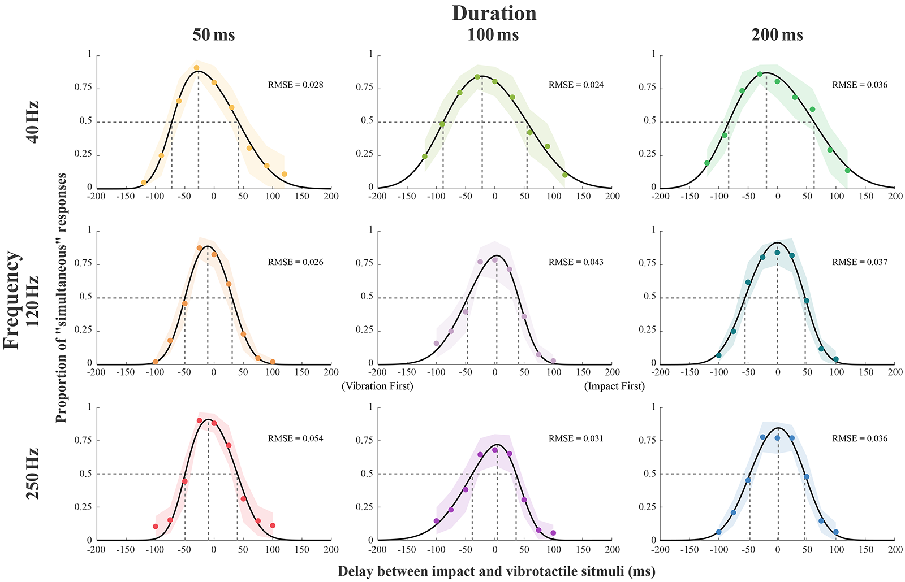

PERCEPTUAL SIMULTANEITY
Between vibrotactile and impact feedback
Perceptual Simultaneity Between Vibrotactile and Impact Stimuli
IEEE World Haptics Conference 2023 (WHC'23)
ABSTRACT
Multimodal haptic rendering that simultaneously presents stimuli of multiple haptic modalities, such as vibration, impact, and thermal, has the potential to provide richer and more immersive haptic experiences than unimodal haptic rendering. For that, maintaining the synchrony between distinct haptic stimuli is crucial, as it significantly affects the overall quality of haptic sensations perceived by the user. In this paper, we investigate the perceptual sensitivity to the simultaneity between multimodal haptic stimuli combining impact and vibration. We design a handheld multimodal haptic device and conduct a perceptual experiment to measure the thresholds of perceived simultaneity between the two modalities while varying the vibration frequency and duration. Our results show that the order of two tactile stimuli for simultaneity perception is affected by both vibration frequency and duration. Specific results about the effects of vibration frequency and duration provide useful insights and design guidelines for eliciting synchronous sensations in multimodal impact and vibration rendering.
FULL CITATION
Chaeyong Park and Seungmoon Choi. Perceptual Simultaneity Between Vibrotactile and Impact Stimuli. In Proceedings of the IEEE World Haptics Conference (Delft, Netherlands, July 10-13, 2023). WHC ’23. IEEE. pp. 148-155. DOI:https://doi.org/10.1109/WHC56415.2023.10224459
FIGURES
Research overview showing acceleration profiles of tactile stimuli combining impact and vibration with different onset times. The research question is about the perceived timing simultaneity between the two stimuli.
Timing diagram of multimodal haptic rendering with a delay.
Acceleration profiles measured from the multimodal haptic device. Time plots (left) and their magnitude spectra (right).

Psychometric functions estimated in the experiment for simultaneity. Shaded areas represent 95% of confidence intervals. A positive delay indicates a lead of the impact stimulus. Each row is for the same frequency of vibration, while each column is for the same duration.